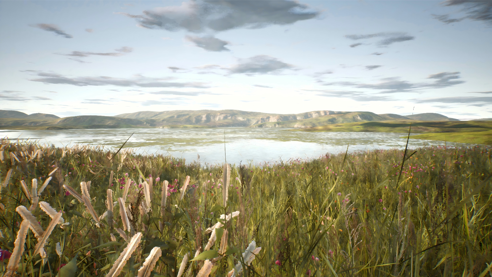

Virtual Blue–Green Spaces
Visual Compositional Mechanisms of Restorative Environments: Effects of Virtual Blue–Green Spaces on State Anxiety Change and Prefrontal Resting-State Activity.
Does the composition of virtual nature change how restorative it feels?
Rather than treating “virtual nature” as a single category, this study compares environments with different relationships between water, vegetation, shoreline, and open space, then examines perceived restoration, anxiety change, and prefrontal resting-state activity.
Here, the environment itself becomes the intervention variable.
Instead of reacting to gaze, the study changes the visual composition around the user and examines how those environmental differences relate to restoration and anxiety.
Explore the three visual conditions.
Switch between the environments to see how the visual balance of blue and green elements changes while the scene remains naturalistic.


Sea
Open water and horizon-dominant composition.
Subjective restoration and prefrontal resting-state activity.
The study assesses perceived restorativeness with PRS, examines state-anxiety change, and compares resting-state fNIRS measures including zfALFF and functional connectivity.
Two different routes to psychological regulation.
VR Mindfulness changes the interaction around attention. The blue–green-space study changes the visual environment itself. Together, they let me compare active attentional guidance with environmental restoration.